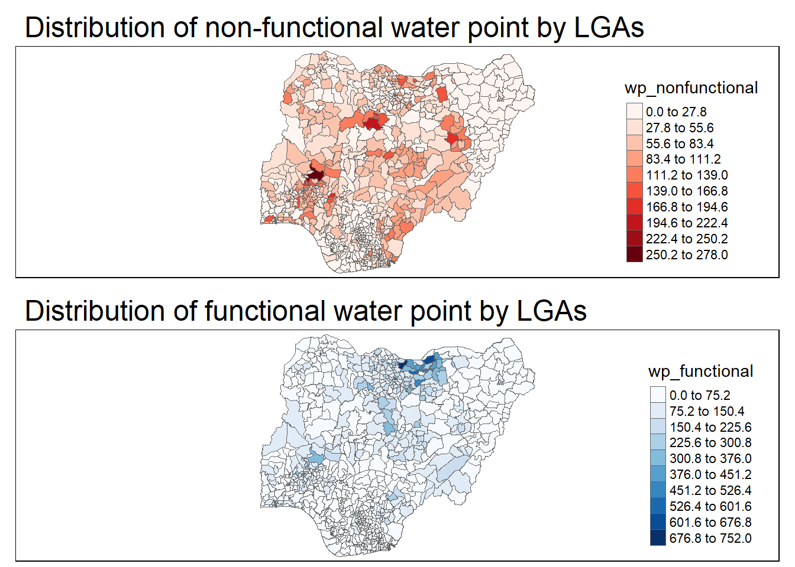

17 Analytical Mapping on Choropleth
Hands-On Exercise for Week 8
(First Published: Jun 10, 2023)
17.1 Learning Outcome
We will gain hands-on experience on using appropriate R methods to plot analytical map. In this class exercise, we will be able to use appropriate functions of tmap and tidyverse to perform the following tasks:
Importing geospatial data in rds format into R environment.
Creating cartographic quality choropleth maps by using appropriate tmap functions.
Creating rate map
Creating percentile map
Creating boxmap
17.2 Getting Started
17.2.1 Install and load the required R libraries
Install and load the the required R packages.
17.2.2 Import the data
A prepared data set called NGA_wp.rds will be used. The data set is a polygon feature data frame providing information on water point of Nigeria at the LGA level.
17.3 Basic Choropleth Mapping
17.3.1 Visualising distribution of non-functional water point
First, we plot a choropleth map showing the distribution of functional and non-function water point by LGA
Show the code
p1 <- tm_shape(NGA_wp) +
tm_fill("wp_functional",
n = 10,
style = "equal",
palette = "Blues") +
tm_borders(lwd = 0.1,
alpha = 1) +
tm_layout(main.title = "Distribution of functional water point by LGAs",
legend.outside = FALSE)
p2 <- tm_shape(NGA_wp) +
tm_fill("wp_nonfunctional",
n = 10,
style = "equal",
palette = "Reds") +
tm_borders(lwd = 0.1,
alpha = 1) +
tm_layout(main.title = "Distribution of non-functional water point by LGAs",
legend.outside = FALSE)
tmap_arrange(p2, p1, ncol = 1)
17.4 Choropleth Map for Rates
In much of our readings we have now seen the importance to map rates rather than counts of things, and that is for the simple reason that water points are not equally distributed in space. That means that if we do not account for how many water points are somewhere, we end up mapping total water point size rather than our topic of interest.
17.4.1 Derive Proportion of Functional Water Points and Non-Functional Water Points
We will tabulate the proportion of functional water points and the proportion of non-functional water points in each LGA. In the following code chunk, mutate() from dplyr package is used to derive two fields, namely pct_functional and pct_nonfunctional.
17.4.2 Plott map of rate
We will plot a choropleth map showing the distribution of percentage functional water point by LGA.

17.5 Extreme Value Maps
Extreme value maps are variations of common choropleth maps where the classification is designed to highlight extreme values at the lower and upper end of the scale, with the goal of identifying outliers. These maps were developed in the spirit of spatializing EDA, i.e., adding spatial features to commonly used approaches in non-spatial EDA (Anselin 1994).
17.5.1 Percentile Map
The percentile map is a special type of quantile map with six specific categories: 0-1%,1-10%, 10-50%,50-90%,90-99%, and 99-100%. The corresponding breakpoints can be derived by means of the base R quantile command, passing an explicit vector of cumulative probabilities as c(0,.01,.1,.5,.9,.99,1). Note that the begin and endpoint need to be included.
17.5.1.1 Data Preparation
Step 1: Exclude records with NA by using the codes below.
Step 2: Create customised classification and extracting values
Show the code
0% 1% 10% 50% 90% 99% 100%
0.0000000 0.0000000 0.2169811 0.4791667 0.8611111 1.0000000 1.0000000 When variables are extracted from an sf data.frame, the geometry is extracted as well. For mapping and spatial manipulation, this is the expected behavior, but many base R functions cannot deal with the geometry. Specifically, the quantile() gives an error. As a result st_set_geomtry(NULL) is used to drop geomtry field.
Create the get.var function
Firstly, we will write an R function as shown below to extract a variable (i.e. wp_nonfunctional) as a vector out of an sf data.frame.
arguments:
vname: variable name (as character, in quotes)
df: name of sf data frame
returns:
- v: vector with values (without a column name)
A percentile mapping function
Next, we will write a percentile mapping function by using the code chunk below.
Show the code
percentmap <- function(vnam, df, legtitle=NA, mtitle="Percentile Map"){
percent <- c(0,.01,.1,.5,.9,.99,1)
var <- get.var(vnam, df)
bperc <- quantile(var, percent)
tm_shape(df) +
tm_polygons() +
tm_shape(df) +
tm_fill(vnam,
title=legtitle,
breaks=bperc,
palette="Blues",
labels=c("< 1%", "1% - 10%", "10% - 50%", "50% - 90%", "90% - 99%", "> 99%")) +
tm_borders() +
tm_layout(main.title = mtitle,
title.position = c("right","bottom"))
}Test drive the percentile mapping function
To run the function, type the codes as shown below.

This is just a bare bones implementation. Additional arguments such as the title, legend positioning just to name a few of them, could be passed to customise various features of the map.
17.5.2 Box map
In essence, a box map is an augmented quartile map, with an additional lower and upper category. When there are lower outliers, then the starting point for the breaks is the minimum value, and the second break is the lower fence. In contrast, when there are no lower outliers, then the starting point for the breaks will be the lower fence, and the second break is the minimum value (there will be no observations that fall in the interval between the lower fence and the minimum value).

Displaying summary statistics on a choropleth map by using the basic principles of boxplot.
To create a box map, a custom breaks specification will be used. However, there is a complication. The break points for the box map vary depending on whether lower or upper outliers are present.
17.5.2.1 Creating the boxbreaks function
The code chunk below is an R function that creating break points for a box map.
arguments:
v: vector with observations
mult: multiplier for IQR (default 1.5)
returns:
- bb: vector with 7 break points compute quartile and fences
Show the code
boxbreaks <- function(v,mult=1.5) {
qv <- unname(quantile(v))
iqr <- qv[4] - qv[2]
upfence <- qv[4] + mult * iqr
lofence <- qv[2] - mult * iqr
# initialize break points vector
bb <- vector(mode="numeric",length=7)
# logic for lower and upper fences
if (lofence < qv[1]) { # no lower outliers
bb[1] <- lofence
bb[2] <- floor(qv[1])
} else {
bb[2] <- lofence
bb[1] <- qv[1]
}
if (upfence > qv[5]) { # no upper outliers
bb[7] <- upfence
bb[6] <- ceiling(qv[5])
} else {
bb[6] <- upfence
bb[7] <- qv[5]
}
bb[3:5] <- qv[2:4]
return(bb)
}17.5.2.2 Creating the get.var function
The code chunk below is an R function to extract a variable as a vector out of an sf data frame.
arguments:
vname: variable name (as character, in quotes)
df: name of sf data frame
returns:
- v: vector with values (without a column name)
17.5.2.3 Test drive the newly created function
Let’s test the newly created function.
17.5.2.4 Boxmap function
The code chunk below is an R function to create a box map.
arguments:
vnam: variable name (as character, in quotes)
df: simple features polygon layer
legtitle: legend title
mtitle: map title
mult: multiplier for IQR
returns:
- a tmap-element (plots a map)
Show the code
boxmap <- function(vnam, df,
legtitle=NA,
mtitle="Box Map",
mult=1.5){
var <- get.var(vnam,df)
bb <- boxbreaks(var)
tm_shape(df) +
tm_polygons() +
tm_shape(df) +
tm_fill(vnam,title=legtitle,
breaks=bb,
palette="Blues",
labels = c("lower outlier",
"< 25%",
"25% - 50%",
"50% - 75%",
"> 75%",
"upper outlier")) +
tm_borders() +
tm_layout(main.title = mtitle,
title.position = c("left",
"top"))
}
\(**That's\) \(all\) \(folks!**\)